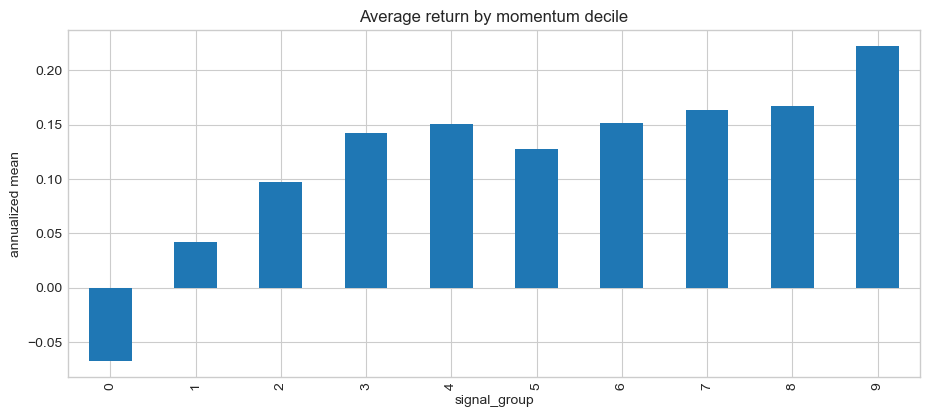
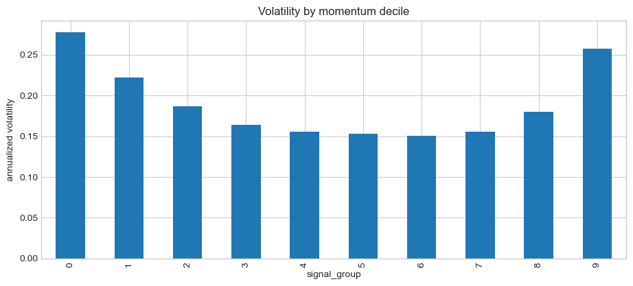
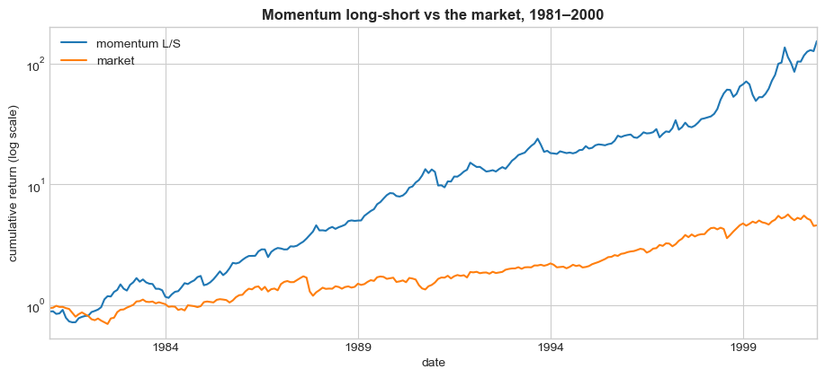
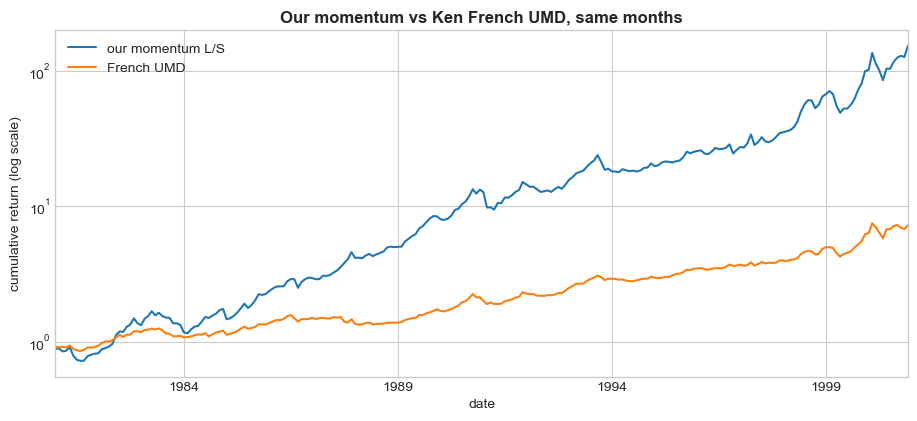
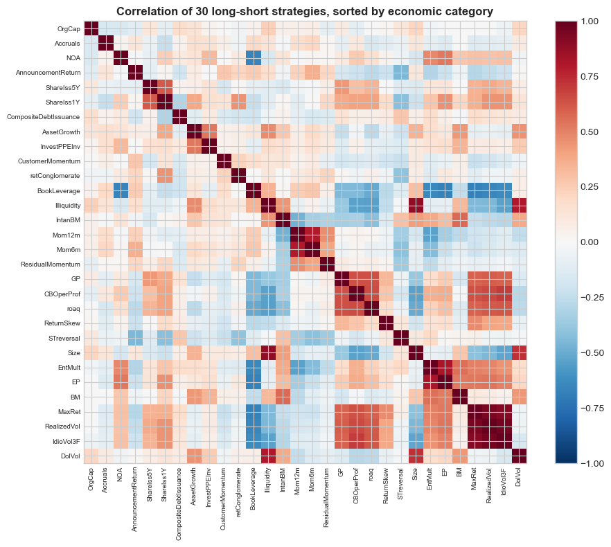

7. Where Factors Come From, and the Factor Zoo#
7.1. 🎯 Learning Objectives#
By the end of today you will be able to:
Distinguish the three kinds of factor model — and say what you have to specify in each
Name the major factor families and the economic story behind each
Say what a value, a lead-lag and a momentum signal are each betting on — and why a spread in average returns is not enough to make a useful factor
Build a factor from scratch, from raw returns to a long-short you can price
Show that the factor zoo is far smaller than its headcount suggests, and why that matters for anyone testing a new signal
7.2. 📋 Today’s Plan#
7.3. 🛠️ Setup#
#@title Setup — run this first
import numpy as np
import pandas as pd
import matplotlib.pyplot as plt
import statsmodels.api as sm
%matplotlib inline
plt.style.use('seaborn-v0_8-whitegrid')
plt.rcParams['figure.figsize'] = [11, 4.5]
import warnings; warnings.filterwarnings('ignore')
BASE = "https://raw.githubusercontent.com/amoreira2/UG54/refs/heads/main/assets/data"
panel = pd.read_parquet(f"{BASE}/panel_backbone_1980_2000.parquet")
menu = pd.read_csv(f"{BASE}/signal_menu.csv")
ff = pd.read_csv(f"{BASE}/ff_monthly.csv", index_col=0, parse_dates=True)
print(f"{len(menu)} signals across {menu['Cat.Economic'].nunique()} economic categories")
menu.groupby('Cat.Economic').size().sort_values(ascending=False)
32 signals across 20 economic categories
Cat.Economic
volatility 3
valuation 3
external financing 3
profitability 3
momentum 3
investment 2
lead lag 2
R&D 1
payout indicator 1
size 1
short-term reversal 1
risk 1
long term reversal 1
accruals 1
liquidity 1
leverage 1
earnings event 1
default risk 1
asset composition 1
volume 1
dtype: int64
7.4. 1. Three Kinds of Factor Model #
Last class we regressed Berkshire Hathaway on the market. Where did “the market” come from? We chose it. That choice is the model.
There are exactly three ways to build a factor model, and they differ in what you have to specify:
Type |
You specify |
You estimate |
How |
Example |
|---|---|---|---|---|
Time-series |
the factor returns |
the betas |
time-series regression |
Fama-French — HML is a portfolio return you can look up |
Characteristic (fundamental) |
the betas |
the factor returns |
cross-sectional regression, each period |
BARRA — book-to-market is the loading |
Statistical |
nothing |
both |
eigendecomposition of Σ |
PCA |
💡 Key Insight: the same duality you already met
In Lecture 3 you sorted stocks on a characteristic to make a portfolio. In Lecture 4 you regressed a return on a portfolio to get a beta. Those are the two directions:
Make a portfolio from a characteristic → you now have a factor return → time-series model
Take the characteristic as the exposure directly → estimate what that exposure paid each month → characteristic model
Same raw material, opposite plumbing.
Today is about the first two, and specifically about which characteristics are worth turning into factors. The statistical route gets its own lecture (L18) because it answers a different question: what if the ones we chose are wrong?
7.5. 2. The Zoo: What People Actually Trade #
Over fifty years the literature has published 300+ characteristics that predict the cross-section of returns. They are not 300 different ideas. They cluster into a handful of families, each with an economic story.
Family |
The claim |
Canonical signal |
Why it might work |
|---|---|---|---|
Value |
Cheap firms outperform |
Book-to-market (Stattman 1980) |
Risk of distress, or over-extrapolation of bad news |
Momentum |
Recent winners keep winning |
12-month return, skip a month (Jegadeesh-Titman 1993) |
Under-reaction to news, then over-shoot |
Profitability |
Profitable firms outperform |
Gross profits / assets (Novy-Marx 2013) |
Quality is under-priced relative to growth |
Investment |
Firms that grow assets fast underperform |
Asset growth (Cooper et al. 2008) |
Empire-building; over-investment at the peak |
Low risk |
Low-volatility, low-beta stocks outperform |
Idiosyncratic vol (Ang et al. 2006) |
Leverage-constrained investors bid up high-beta names |
Issuance |
Firms issuing equity underperform |
Share issuance (Pontiff-Woodgate 2008) |
Managers issue when the stock is expensive |
Liquidity |
Illiquid stocks earn a premium |
Amihud (2002) |
Compensation for not being able to get out |
Lead-lag |
News about one firm shows up late in a linked firm |
Customer momentum (Cohen-Frazzini 2008) |
Limited attention: information travels slowly along economic links |
📌 Every one of these is in your signal menu, with the original paper and the t-statistic its authors reported.
7.5.1. Two stories, and they are not the same#
Every family above has two competing explanations, and which one you believe changes what you expect next.
Risk. The premium is compensation for bearing something genuinely unpleasant. If so it should persist — nobody is going to arbitrage away payment for real risk.
Mispricing. Investors are making a systematic error. If so, the premium should shrink once the paper is published and people trade against it.
The could also be something in the middle, where it is risk, but it’s price was too high.
If that is true what do you expect to happen with realized returns of the strategy once more people trade it? What about expected retruns?
7.6. 3. Three Factors, Three Stories #
Three families from the menu: one where a formula forces the story on you, one where it has to be argued, and one we build from scratch in a moment.
7.6.1. Value: a price ratio has to predict something#
Simple Gordon Growth Model logic:
Multi-period version:
A high dividend yield means investors expect a high return \(r\) or slow cash-flow growth \(g\) — nothing else. That is what a price means if it is the value of future cash flows. The other value ratios put a different number on top (book, earnings, EBITDA). They all slightly different but conceputally very similar with the numerator picking up current fundamentals and the denominator the market price.
7.6.2. Lead-lag: news travels slowly#
Both signals use a price move in one firm to predict a later move in a linked firm.
CustomerMomentum(Cohen–Frazzini 2008). Firms disclose customers above 10% of sales. Buy suppliers whose customers rose last month; short those whose customers fell.retConglomerate(Cohen–Lou 2012). Last month’s return on single-industry firms in a conglomerate’s industries, weighted by its sales mix.
The news is public and already in one price. It reaches the linked price late because connecting the two takes attention, and attention is scarce. No identity forces this and no obvious risk explains it, so it predicts: short-lived, and strongest where few people are watching.
Top minus bottom decile, NYSE breakpoints, 1980–2000:
equal-weighted |
value-weighted |
|
|---|---|---|
|
+15.9%/yr (t = 4.42) |
+13.5%/yr (t = 2.63) |
|
+21.0%/yr (t = 5.49) |
+6.8%/yr (t = 1.73) |
7.6.3. Momentum: the past return is the signal#
No valuation formula and no linked firm — just the stock’s own past return. Buy what went up over the past year, short what went down (Jegadeesh and Titman, 1993).
Daniel and Moskowitz state the construction precisely: rank stocks on their cumulative return from twelve months before the formation date to two months before it — the t−12 to t−2 return — leaving a one-month gap between the end of that window and the start of the holding period, “to avoid the short-term reversals” documented by Jegadeesh (1990) and Lehmann (1990).
Both stories are on offer here:
Under-reaction. Prices move too little when news arrives, so the move keeps going as the rest of the information gets absorbed.
Risk. Winners are whatever the market has been rewarding lately, so the trade bets the current regime holds. It crashes when the regime turns, and momentum’s worst months are the worst you will meet in this course.
Momentum needs nothing but returns, which is why it is the one we can build from raw material inside a lecture.
7.7. 4. Build One From Scratch: Momentum #
Every signal you have used so far arrived as a file someone else made. This is where those files come from. Follow the recipe on the previous slide:
Cumulate each stock’s returns over eleven months.
Lag the result twice, so the window ends at t−2 rather than at t.
Sort it into ten equal-count groups, value-weight inside each, and take the top decile minus the bottom.
Step 2 is where the thinking is, and we come back to it once the code is on the screen.
🤔 Before any code. The panel has one row per stock-month with a
retcolumn. Name two things that can go wrong turning that into an eleven-month past return.
7.7.1. Construct the rolling cumulative returns#
We need to construct the returns from t-10 to t:
We will now cumulate the returns of each asset on a rolling basis. As described in the procedure we will look back for 11 months and compute the cumulative return in the period.
df = panel.copy()
df['1+ret'] = (df['ret'] + 1) # gross returns
df = df.set_index(['date'])
temp = (df.groupby('permno')[['1+ret']]
.rolling(window=11, min_periods=11)
.apply(lambda x: x.prod(), raw=True)) # cumulative return over 11 months
temp = temp.rename(columns={'1+ret': 'cumret11'})
temp = temp.reset_index()
temp.tail(5)
| permno | date | cumret11 | |
|---|---|---|---|
| 1517169 | 93324 | 1985-07-31 | NaN |
| 1517170 | 93324 | 1985-08-31 | NaN |
| 1517171 | 93324 | 1985-09-30 | NaN |
| 1517172 | 93324 | 1985-10-31 | 0.291667 |
| 1517173 | 93324 | 1985-11-30 | 0.193548 |
7.7.2. Merge Signal with returns#
We now merge back this cumret11 variable with our data set
Reset the
dfindex so bothpermnoanddateare normal columns.This makes the merge easier
df = pd.merge(df.reset_index(), temp[['permno', 'date', 'cumret11']],
how='left', on=['permno', 'date'])
7.7.3. Get the timing right#
The first month to make sure the signal is tradable, so that is mandatory to make this a valid strategy without look-ahead bias
We do an additional month, so lag by 2, because we will be skipping a month between the last return data used in the signal and the time we buy the stock
So we cumulate returns up to t-2, and form the portfolio at the beginning of month t, so return t-1 does not go either in the signal or in our strategy
For example, for the portfolio formed on the last day of December 1990 and held till the last day of January 1991, our signal is the cumulative return from the last day of December 1989 till the last day of November 1990.
So the returns for the month of December 1990 are skipped and not used in the signal construction
Before lagging, it is always important to sort the values so the result is what you intended
df = df.sort_values(['date', 'permno'])
df['mom'] = df.groupby('permno')['cumret11'].shift(2) # lag twice: tradability, then the reversal month
df = df.dropna(subset=['mom'], how='any')
df = df.drop(['1+ret', 'cumret11'], axis=1)
# lag market cap
df['me_l1'] = df.groupby('permno')['me'].shift(1)
df.tail()
| date | permno | ret | me | prc | exchcd | shrcd | mom | me_l1 | |
|---|---|---|---|---|---|---|---|---|---|
| 1513214 | 2000-12-31 | 92655 | 0.046351 | 2.005895e+07 | 61.375 | 1 | 11 | 2.106959 | 1.917039e+07 |
| 1513394 | 2000-12-31 | 92663 | 0.259259 | 1.512830e+05 | 8.500 | 3 | 11 | 0.888888 | 1.198868e+05 |
| 1514074 | 2000-12-31 | 92807 | 0.000000 | 5.717100e+04 | 4.250 | 3 | 11 | 0.613943 | 5.713275e+04 |
| 1514683 | 2000-12-31 | 92874 | -0.099237 | 2.801762e+04 | 7.375 | 3 | 11 | 1.967212 | 3.110431e+04 |
| 1516214 | 2000-12-31 | 93105 | 0.284597 | 4.824608e+05 | 11.625 | 3 | 11 | 0.838757 | 3.762297e+05 |
7.7.4. Portfolio formation#
We can now simply use the function we build below to construct characteristic-based portfolios.
Let’s start simple and build the sorts based on the entire cross-section of the signal.
def portfolio_formation(df, signal, ngroups=10):
df['signal_group'] = df.groupby(['date'])[signal].transform(
lambda x: pd.qcut(x, ngroups, labels=False, duplicates='drop'))
ret = df.groupby(['date', 'signal_group']).apply(
lambda x: (x['ret'] * x['me_l1']).sum() / x['me_l1'].sum())
ret = ret.unstack(level=-1)
return ret
mom = portfolio_formation(df, 'mom', ngroups=10)
(mom.mean() * 12).plot.bar(title='Average return by momentum decile')
plt.ylabel('annualized mean')
plt.show()
(mom.std() * 12 ** 0.5).plot.bar(title='Volatility by momentum decile')
plt.ylabel('annualized volatility')
plt.show()


7.7.5. Wrapping it all in a function, from the return and market-cap data to the signal-sorted portfolio#
Things to try:
Play with different look-back windows
Play with how many months to skip (1 is the minimum to make the strategy valid, 2 is the standard)
What do you think will happen if you don’t skip and let the signal overlap with the return data?
What happens if you skip more months?
What happens if you sort only on the month that the standard momentum skips?
What if you sort on very long-term momentum, like 60 months?
Cumulative return is just one possible moment to look at
What about volatility?
What about covariance with the market?
What about maximum/minimum return?
# put it all together in a function
def momentum(df, ngroups=10, lookback=11, extraskip=1):
df['1+ret'] = (df['ret'] + 1)
df = df.set_index(['date'])
temp = (df.groupby('permno')[['1+ret']]
.rolling(window=lookback, min_periods=lookback)
.apply(np.prod, raw=True))
temp = temp.rename(columns={'1+ret': 'signal_contemp'})
temp = temp.reset_index()
df = pd.merge(df.reset_index(), temp[['permno', 'date', 'signal_contemp']],
how='left', on=['permno', 'date'])
df = df.sort_values(['date', 'permno'])
df['me_l1'] = df.groupby('permno')['me'].shift(1)
df['mom'] = df.groupby('permno')['signal_contemp'].shift(1 + extraskip)
df = df.dropna(subset=['mom'], how='any')
ret = portfolio_formation(df, 'mom', ngroups=ngroups)
return ret
mom = momentum(panel, ngroups=10, lookback=11, extraskip=1)
7.7.6. Why momentum is lagged twice#
The rolling window ends in the month you are standing in, and the signal gets lagged twice before it sorts anything. The two lags are there for two different reasons.
Tradability. The last return in the window is not known until that month is over, so a signal ending at month \(t\) cannot be used to buy at the start of month \(t\). Lag once and the signal is complete before the holding month begins: no overlap between the returns inside the signal and the return you are trying to earn. Skip this and the backtest is not a strategy, it is look-ahead.
Short-term reversal. Lag a second time and the month immediately before the holding month drops out of the window too. That month is where reversal lives — last month’s winners tend to bounce back, which pulls against momentum.
The .shift(2) in the code above does both at once. Together the ranking
window runs from t−12 to t−2, which is the Daniel and Moskowitz construction.
Only the first lag is mandatory. Skipping the second is an economic choice, not
a correctness requirement: run momentum(panel, extraskip=0) and the same
strategy earns +21.4%/yr instead of +28.5%.
7.7.7. Comparing with the market, and with UMD#


our momentum, 240 months
raw +28.54%/yr t 5.08 Sharpe 1.14
vs market alpha +27.82%/yr (t 4.88) beta +0.08
240 common months, correlation 0.852
ours +28.54%/yr t 5.08 Sharpe 1.14
UMD +10.71%/yr t 3.85 Sharpe 0.86
ours on UMD: alpha +10.12%/yr (t 3.33) beta +1.72 R² 0.725
7.7.8. What the comparison says#
Momentum earns +28.5%/yr with a Sharpe ratio of 1.14, and the market explains almost none of it: beta 0.08, alpha +27.8%/yr with t = 4.9.
Against Ken French’s UMD — the same idea, built by someone else — ours correlates 0.85 and loads 1.72 on it, with +10.1%/yr left over (t = 3.3). The same trade, run harder: our deciles are cut across every stock in the panel, so the legs reach deep into small caps, while French uses NYSE breakpoints and coarser buckets. Ours is about twice as volatile as a result.
Correlating 0.85 with a published factor is not the same as reproducing it. The construction choices — where the breakpoints sit, which stocks are eligible — are worth as much here as the idea itself.
7.8. 5. A return spread is not yet something to brag about#
Suppose high-signal stocks simply have higher betas: \(\beta = 0.5\), market premium 8%. The long-short earns \(0.5 \times 8\% = 4\%\) with \(\alpha = 0\). It does sort stocks by expected return — through market exposure. Half a unit of the market earns the same 4% with less risk.
A portfolio moves the frontier only through its alpha (Performance Evaluation lecture):
Question |
Test |
|---|---|
Does the signal predict returns? |
average top minus bottom \(\neq 0\) |
Does it add anything to the market? |
\(\alpha \neq 0\) |
It cuts both ways: value earned +5.2%/yr with \(\beta = -0.20\), so its alpha was +7.1%. Next lecture the benchmark gets more factors; the test stays alpha.
7.9. 6. The Zoo Is Smaller Than It Looks #
portfolio_formation() does not care which column you hand it. Run it on every signal on
the menu, and ask the question the names cannot answer: how many distinct bets
are these?
30 strategies over 251 common months
mean pairwise correlation +0.046
|corr| > 0.5 10.1% of pairs
mean |corr| WITHIN category 0.588 (17 pairs)
mean |corr| ACROSS categories 0.197 (418 pairs)
most correlated pairs:
IdioVol3F RealizedVol +0.96
MaxRet RealizedVol +0.94
IdioVol3F MaxRet +0.91
Illiquidity Size +0.89
order = (menu.set_index('Acronym').loc[[c for c in C.columns], 'Cat.Economic']
.sort_values().index.tolist())
fig, ax = plt.subplots(figsize=(9.5, 8))
im = ax.imshow(C.loc[order, order], cmap='RdBu_r', vmin=-1, vmax=1)
ax.set_xticks(range(len(order))); ax.set_xticklabels(order, rotation=90, fontsize=7)
ax.set_yticks(range(len(order))); ax.set_yticklabels(order, fontsize=7)
ax.set_title(f'Correlation of {len(order)} long-short strategies, sorted by economic category',
fontweight='bold')
plt.colorbar(im, fraction=0.046); plt.tight_layout(); plt.show()

7.9.1. Count bets, not papers#
The average pairwise correlation is about +0.05. Stop there and the zoo looks wonderfully diversified: thirty nearly independent sources of return.
The split says otherwise. Within an economic category the mean |ρ| is 0.59; across categories it is 0.20 — and the blocks down the diagonal of the map are where that lives. MaxRet, RealizedVol and IdioVol3F correlate 0.91 to 0.96: three papers, two journals, fifteen years apart, one trade.
Illiquidity and Size correlate 0.89 as strategies — and 0.07 as raw characteristics. That gap is the trap. Correlate the strategies, never the signals: a portfolio is what you own, and two unrelated-looking numbers can sort stocks the same way.
🤖 AI-Era Insight
Ask an AI to “build a diversified multi-factor strategy” and it will happily combine value, size, low-volatility and liquidity — several of which are close to the same trade in this sample. It has the names, not the correlation matrix.
⚠️ Caution: this breaks a lot of published evidence
If 300 papers each report an independent-looking discovery, that looks like overwhelming support for cross-sectional predictability. If those 300 papers are really testing eight or ten distinct bets over and over on overlapping samples, it is much weaker support than the headcount suggests. We take that apart in Lecture 9, and Lecture 18 asks the sharper version: how many distinct factors can this data support at all?
7.10. 🛠️ Hands-On: Find Your Signal’s Twin #
You picked a signal in Lecture 3 and regressed it in Lecture 4. Now find out what else it is: pull its row out of the correlation matrix and look at its nearest neighbours.
If the nearest neighbour is above +0.8, you are not holding a distinct bet, and any “confirmation” from that other signal is not independent evidence. If the closest is below +0.3, your signal is doing something the rest of the zoo is not — more interesting, and also more suspicious: check that it is not simply noisier.
# === EDIT + YOUR TURN ===
MY_SIGNAL = "GP" # ← your pick from Lecture 3
row = ____
print(f"{MY_SIGNAL} ({cat.get(MY_SIGNAL)})\n")
print("closest 5:")
for s, c in row.head(5).items():
flag = " ← same family" if cat.get(s) == cat.get(MY_SIGNAL) else ""
print(f" {s:24s} {c:+.2f} {cat.get(s):22s}{flag}")
print("\nmost negatively correlated:")
for s, c in row.tail(3).items():
print(f" {s:24s} {c:+.2f} {cat.get(s)}")
---------------------------------------------------------------------------
NameError Traceback (most recent call last)
Cell In[11], line 4
1 # === EDIT + YOUR TURN ===
2 MY_SIGNAL = "GP" # ← your pick from Lecture 3
----> 4 row = ____
6 print(f"{MY_SIGNAL} ({cat.get(MY_SIGNAL)})\n")
7 print("closest 5:")
NameError: name '____' is not defined
7.11. 🎯 Challenge: Does Beta Explain It? #
Homework — due before Lecture 6.
Two signals: BookLeverage and IdioVol3F. For each, find out whether its spread
in average returns is anything more than a spread in beta — and what that means
for someone who already holds the market.
7.11.1. Q1 — Ten portfolios, their betas, and the long-short#
Build the ten portfolios exactly as we did for momentum: lag the signal one
month, then hand it to portfolio_formation() — ten equal-count groups each
month, value-weighted by me_l1 inside each. It numbers the groups 0 to 9, so
portfolio 1 below is column 0 and portfolio 10 is column 9.
Subtract the T-bill rate (ff['RF']) from each portfolio’s return and regress it
on the market’s excess return (ff['Mkt-RF']), 1980–2000.
Then form the long-short, portfolio 10 minus portfolio 1, and regress it on the market too. The T-bill rate cancels in a long-short, so do not subtract it again.
Write it once as a function and run it on both signals.
📌 Required variable names, for each signal (
_blfor BookLeverage,_ivfor IdioVol3F):betas_bl = ____ # 10 values: market beta of portfolios 1 to 10 avg_bl = ____ # 10 values: average excess return, annualized ls_beta_bl = ____ # 10 - 1: market beta ls_avg_bl = ____ # 10 - 1: average return, annualized ls_t_bl = ____ # 10 - 1: t-statistic of its alpha
# Your work here
# Required outputs — fill these in:
betas_bl = ____
avg_bl = ____
ls_beta_bl = ____
ls_avg_bl = ____
ls_t_bl = ____
betas_iv = ____
avg_iv = ____
ls_beta_iv = ____
ls_avg_iv = ____
ls_t_iv = ____
for name, b, a, lb, la, lt in [('BookLeverage', betas_bl, avg_bl, ls_beta_bl, ls_avg_bl, ls_t_bl),
('IdioVol3F', betas_iv, avg_iv, ls_beta_iv, ls_avg_iv, ls_t_iv)]:
print(name)
print(pd.DataFrame({'beta': np.asarray(b), 'avg excess return': np.asarray(a)},
index=range(1, 11)).round(3).to_string())
print(f" 10 - 1: beta {lb:+.2f} average {la:+.2%}/yr alpha t = {lt:+.2f}\n")
7.11.2. Q2 — The picture#
Two panels, one per signal. In each, plot beta on the x-axis against average excess return on the y-axis for the ten portfolios, labelled 1 to 10. Add the long-short 10 − 1 as a different marker, and the market. What is the market’s beta?
📌 Required variable name:
mkt_avg = ____ # the market's average excess return, annualized, same months
# Required output — fill this in:
mkt_avg = ____
fig, axes = plt.subplots(1, 2, figsize=(12, 5), sharey=True)
# Your plot here: in each panel the ten portfolios (labelled 1-10),
# the 10 - 1 long-short, and the market
for ax, name in zip(axes, ['BookLeverage', 'IdioVol3F']):
ax.set_title(name); ax.set_xlabel('market beta')
axes[0].set_ylabel('average excess return, annualized')
plt.tight_layout(); plt.show()
7.11.3. Q3 — The memo#
📝 Your task — maximum 6 sentences
Describe what you see in each plot. Do average returns line up with beta? Where does each long-short sit?
Then: an investor is fully invested in the market and wants a higher Sharpe ratio. What does each plot tell them to do?
Hint: what could that investor already get by holding more or less of the market — or even shorting it — and keeping the rest in T-bills? Where would that put them on your plots?
MEMO = """
Write your memo here. Don't delete the surrounding triple quotes.
"""
print(MEMO)
7.12. 📤 Submission #
# === 📤 SUBMISSION CELL — Run this last ===
import json, base64, hashlib, datetime as dt
required = ["betas_bl", "avg_bl", "ls_beta_bl", "ls_avg_bl", "ls_t_bl",
"betas_iv", "avg_iv", "ls_beta_iv", "ls_avg_iv", "ls_t_iv",
"mkt_avg", "MEMO"]
missing = [v for v in required if v not in globals()]
if missing:
raise NameError(f"\n❌ Missing before submission: {missing}")
lists = ["betas_bl", "avg_bl", "betas_iv", "avg_iv"]
if any(len(np.ravel(eval(k))) != 10 for k in lists):
raise ValueError("\n❌ betas_* and avg_* should each hold ten numbers, portfolios 1 to 10")
payload = {
"assignment": "L5_FactorZoo_AI",
"ts": dt.datetime.now(dt.timezone.utc).isoformat(timespec="seconds").replace("+00:00", "Z"),
"answers": {k: ([float(x) for x in np.ravel(eval(k))] if k in lists else float(eval(k)))
for k in required if k != "MEMO"},
"memo": MEMO.strip(),
}
blob = json.dumps(payload, sort_keys=True)
checksum = hashlib.sha256(blob.encode()).hexdigest()[:8]
token = f"UG54::{checksum}::{base64.b64encode(blob.encode()).decode()}"
print("=" * 72)
print("📋 COPY THE LINE BELOW AND PASTE INTO THE SUBMISSION FORM")
print("=" * 72)
print(token)
print("=" * 72)
print("Submission form: https://forms.gle/yazZ8bbatL87jdJi7")
7.13. 🧠 Key Takeaways #
Three kinds of factor model, distinguished by what you specify: time-series (you name the factor returns), characteristic (you name the exposures), statistical (you name nothing).
A sort makes a factor; a regression consumes one. Same raw material, opposite direction.
Every family has two stories, risk and mispricing, and they predict different futures. Mispricing implies the premium dies after publication.
A price ratio has to forecast something — expected return or cash-flow growth, there is nothing else it can be. A lead-lag signal has no identity behind it; it is a claim about attention.
You can build a factor from returns alone. Momentum, the t−12 to t−2 return, sorted and value-weighted: +28.5%/yr in this sample.
Two lags, two reasons. One makes the signal tradable — without it you have look-ahead, not a strategy. The second skips the reversal month, and it is worth about 7 points a year here.
A spread in average returns is not a new factor. It adds something only if its alpha against the factors you already hold is nonzero: \(SR_{\max}^2 = SR_m^2 + (\alpha/\sigma_\varepsilon)^2\).
Correlate the strategies, never the signals. Within a family mean |ρ| ≈ 0.59, across families ≈ 0.20, so diversification comes from spanning families. And 300 papers is not 300 pieces of evidence.
7.13.1. Next class#
We’ve been using one factor — the market. Next: how to run and read a model with several, why alpha shrinks every time you add one, and the two different ways to estimate the whole thing.
7.14. 📎 Appendix #
# ═══════════════════════════════════════════════════════════════════════
# 📎 APPENDIX — data
# ═══════════════════════════════════════════════════════════════════════
# Everything today comes from the repo:
# panel = pd.read_parquet(f"{BASE}/panel_backbone_1980_2000.parquet")
# signal = pd.read_parquet(f"{BASE}/signals/<Acronym>.parquet")
# menu = pd.read_csv(f"{BASE}/signal_menu.csv")
#
# The 32 signals are replications from Open Source Asset Pricing
# (Chen & Zimmermann), which covers 300+ published cross-sectional predictors:
# https://www.openassetpricing.com
# `signal_menu.csv` carries each one's authors, year, journal, economic
# category, and the t-statistic the ORIGINAL paper reported — which is what
# makes the replication comparison in Lecture 3 possible.